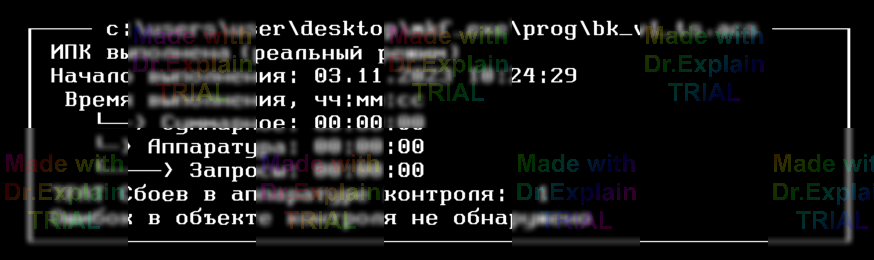
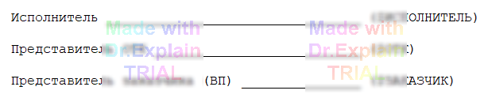
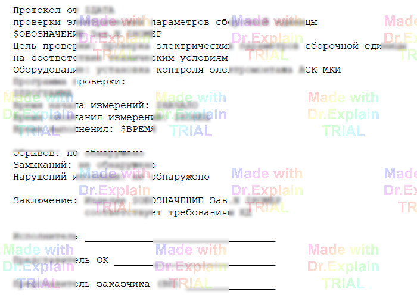

2.4 Завершение выполнения программы контроля
После штатного окончания или прерывания ПК ПО АСК сначала возвращает аппаратуру в исходное состояние, затем выводит сводный блок статистики (пример — рис. 1):
- Программа выполнена / прервана — итог выполнения.
- Режим — «Реальный» или «Холостой».
- Начало выполнения — дата / время старта.
- Время выполнения — общее время работы ПК.
- Аппаратура — суммарное «чистое» время управления АСК.
- Запросы — время, затраченное оператором на меню и подсказки.
- Остановы — «простой» при пошаговом выполнении или при ошибках в ОК.

Корректным считается выполнение, завершившееся строкой
«Программа выполнена
» и отсутствием сообщений с префиксами
?FAT, ?MOD, ?ERR и ?JMP.
Печать резюме
Если в стартовой папке ПО АСК есть файл
resume.txt (CP‑866, может быть пустым) и
опция Выдавать запрос на печать
активна, его содержимое выводится в конце протокола.
В противном случае показывается дефолтное сообщение
(рис. 2).

Дополнительный протокол (xresume.txt)
При наличии xresume.txt и включённой опции
«Печатать дополнительный протокол» ПО АСК формирует окно
«Дополнительный протокол» и предлагает его напечатать.
В текстовых файлах resume.txt и xresume.txt
поддерживаются следующие макросы (записываются ПРОПИСНЫМИ; при
формировании отчёта заменяются на данные последней сессии ПК):
$ОБОЗНАЧЕНИЕ— децимальный номер ОК;$НАИМЕНОВАНИЕ— наименование ОК;$НОМЕР— заводской номер ОК (вызывается запрос ввода);$ДАТА,$НАЧАЛО,$КОНЕЦ,$ВРЕМЯ;$ПРОГРАММА— имя файла ПК;-
$ИСПОЛНИТЕЛЬ,$ОТК,$ЗАКАЗЧИК— интерактивный ввод ФИО; -
$НОРМА(текст),$БРАК(текст)— выводят текст, если результат НОРМА / БРАК (иначе макрос удаляется); -
$ПРИМ(также$ПРИМЕЧ,$ПРИМЕЧАНИЕ) — значение одноимённого ключа в команде ОК; $КД— значение ключа «КД» из команды ОК;-
$ДОКили$DOC— все сообщения команд с ключом «Д».
Замечания
-
Макросы
$НОРМА/$БРАКразумно использовать только вresume.txt;xresume.txtвыводится только при результате «НОРМА». -
В
resume.txtнет смысла применять макросы, выводимые автоматически ($ОБОЗНАЧЕНИЕ,$ДОКи др.).

Документирование начала протокола
В начале протокола ПО АСК автоматически пишет название и дату
последней модификации файла ПК, а также строку команды ОК,
например:
$DOC Объект контроля: БИ1.409.011‑01 * ТЕСТ РЕЖИМОВ КОНТРОЛЯ $DOC Файл ПК: C:\MKI_M\PROG\TEST‑MS.ACS (ИПК) $DOC создан: 07‑May‑2006 09:56:36 $DOCАСК: АСК‑МКИ
При активной опции «Выдавать запрос на печать» сразу после завершения выполнения появляется диалог печати текущего протокола (см. п. 2.1.9).